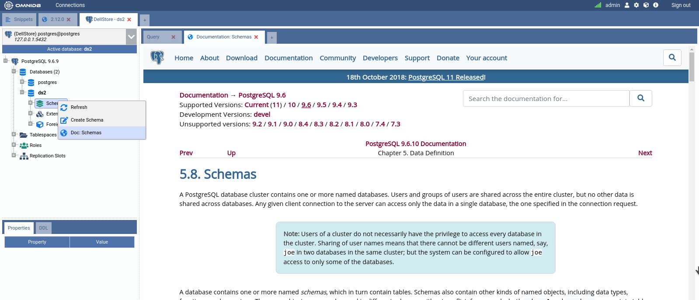
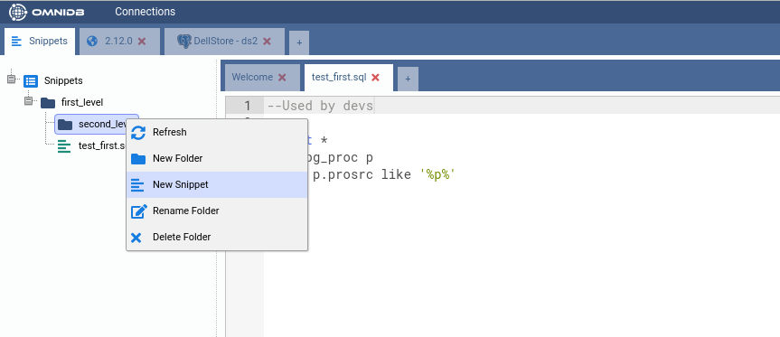
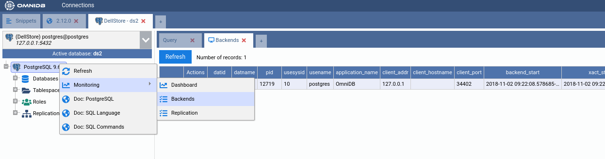
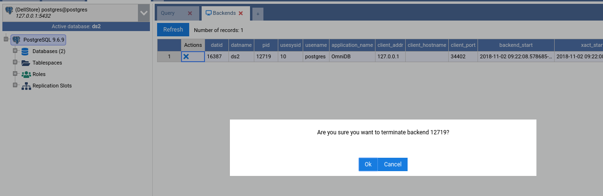
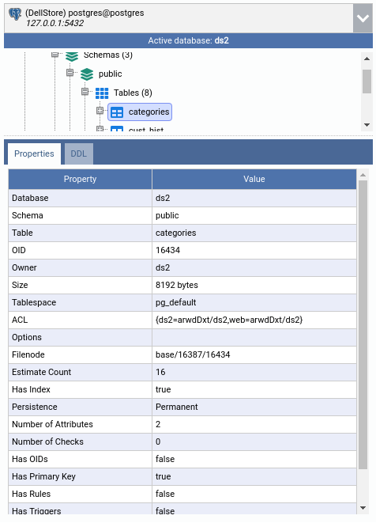
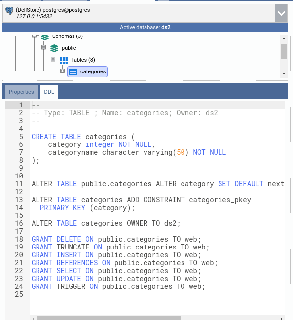
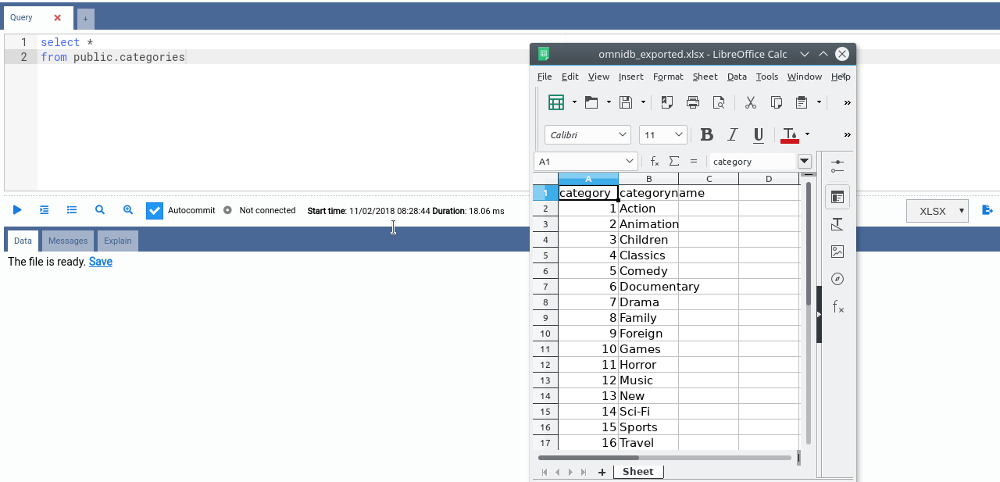
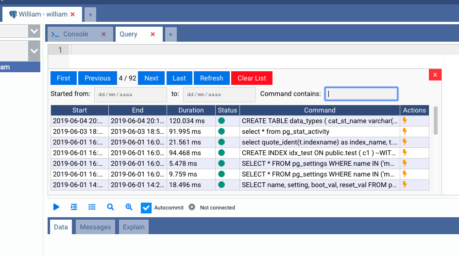
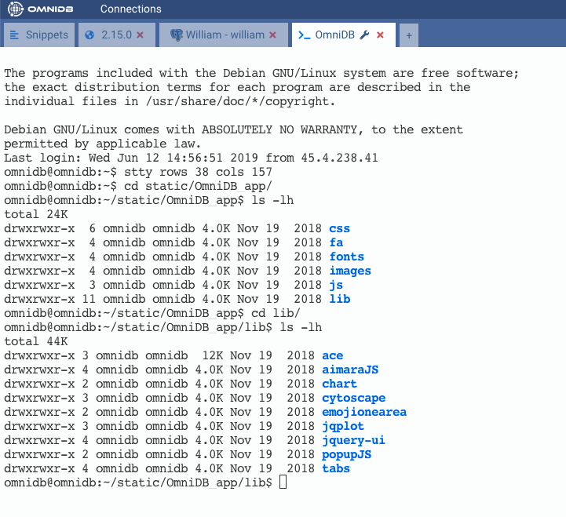

Fonctionnalités supplémentaires
Paramètres utilisateur
Toujours dans le coin supérieur droit, en cliquant sur l’icône en forme d’engrenage, OmniDB ouvre la fenêtre User Settings (Paramètres utilisateur). Elle comporte quatre onglets :
- Shortcuts (Raccourcis) : permet à l’utilisateur de modifier ses raccourcis dans OmniDB.
- Options : permet à l’utilisateur de modifier la taille de police de l’interface et de configurer les options liées au CSV (encodage, délimiteur). Le thème d’OmniDB (Clair/Sombre) est déterminé automatiquement selon la préférence de thème de couleur de votre système d’exploitation.
- Formatting (Formatage) : configure la façon dont le formateur SQL (l’action Indent SQL) réécrit votre requête — caractère d’indentation (espaces ou tabulation), taille d’indentation (2/3/4), style de virgule (en début ou en fin de ligne) et casse des mots-clés (conserver/MAJUSCULES/minuscules).
- Password (Mot de passe) : permet à l’utilisateur de changer son mot de passe.
Aide contextuelle
La plupart des nœuds de l’arborescence (généralement les nœuds de regroupement comme Schemas ou Tables) offrent une aide contextuelle. Cette fonctionnalité est accessible via un clic droit sur le nœud de l’arborescence. Lorsque vous cliquez sur l’option Doc : …, OmniDB ouvre la page correspondante de la documentation PostgreSQL en ligne dans votre navigateur web (le navigateur par défaut du système dans l’application de bureau, ou un nouvel onglet lorsqu’elle fonctionne en tant qu’OmniDB Server accessible depuis un navigateur). Elle sélectionne également la bonne version de documentation pour le serveur PostgreSQL auquel vous êtes connecté.

Extraits de code (Snippets)
La fenêtre de travail (Workspace Window) comporte un onglet externe fixe doté d’une fonctionnalité utile
appelée Snippets. Elle vous permet de stocker des requêtes, des instructions de commande et tout autre
type de texte que vous souhaitez conserver. Vous pouvez également organiser les extraits dans une arborescence de
répertoires selon vos préférences. Tous les répertoires et extraits que vous créez sont stockés dans la base de
données utilisateur omnidb.db et persistent lors des mises à jour d’OmniDB.

Gestion des processus serveur
En faisant un clic droit sur le nœud racine de l’arborescence, puis en déplaçant le pointeur de la souris vers Monitoring (Supervision) et en cliquant sur Backends (Processus serveur), l’utilisateur peut voir toutes les activités en cours dans la base de données. Certaines informations sont masquées pour les utilisateurs normaux ; seuls les superutilisateurs de la base de données sont autorisés à les voir.

En cliquant sur le X dans la colonne Actions, vous pouvez mettre fin au processus. Une fenêtre de confirmation apparaîtra.

Propriétés et DDL
En cliquant sur la plupart des objets de l’arborescence (tables, séquences, vues, rôles, bases de données, etc.), l’utilisateur pourra consulter une liste très complète des propriétés de l’objet.

Dans l’autre panneau, appelé DDL, l’utilisateur peut voir le code source SQL DDL permettant de recréer l’objet. L’utilisateur peut copier ce texte et le coller où il le souhaite.

Export de données
L’onglet Requête (Query Tab) permet d’enregistrer les données des résultats de requête dans un fichier CSV ou XLSX. Une fois que vous cliquez sur le bouton Export Data (Exporter les données), un traitement annulable démarre en arrière-plan pour enregistrer les données dans le fichier. Une fois terminé, OmniDB fournit un lien nommé Save (Enregistrer), permettant à l’utilisateur de télécharger le fichier.

Tous les fichiers sont stockés dans un dossier temporaire situé dans le dossier d’OmniDB. OmniDB nettoie régulièrement ce dossier, en ne conservant que les fichiers datant de moins de 24 heures.
Historique des requêtes
Depuis l’onglet Requête, vous pouvez cliquer sur le bouton Command History (Historique des commandes) pour afficher un onglet de requête complet, consultable et permettant la recherche.

Console SSH
OmniDB propose également une console SSH complète.
